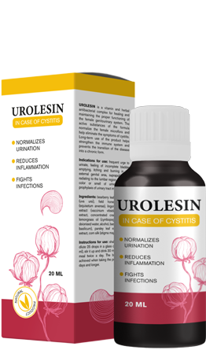

UROLESIN
HATÉKONY MEGOLDÁS EGY KÉNYES PROBLÉMÁRA

Fertőző és gyulladásos folyamatokat kezel
 Elpusztítja a patogén mikroorganizmusokat
Elpusztítja a patogén mikroorganizmusokat Megszünteti a fájdalmat és a kényelmetlenséget
Megszünteti a fájdalmat és a kényelmetlenségetHatékony krónikus forma ellen
JELLEGZETES TÜNETEK ÉSZLELÉSE ESETÉN
HALADÉKTALANUL CSELEKEDJEN!
Gyakran hamis vizelési vágy
Vágás, fájdalom, égés és viszketés a húgycsőben
Fájdalom az alsó hasban vagy a hát alsó részén
Vérszennyeződések a vizeletben
Rossz vizeletszag
Láz, hányinger vagy hányás

INTIM PROBLÉMA SÚLYOS KÖVETKEZMÉNYEKKEL
A cystitis a hólyag gyulladása, a nyálkahártya fertőző elváltozása. A fő tünet a gyakori fájdalmas vizelés. Előfordulhat a testhőmérséklet emelkedése és vér megjelenése a vizeletben. Szinte minden nő szembesül ezzel a problémával élete során.
Orosz András urológus, tapasztalat 15 év
MIÉRT FORDUL ELŐ A NŐKNÉL GYAKRABBAN A GÚLYAGGYULADÁS MINT A FÉRFIAKNÁL?
Anatómiai jellemzők: a női húgycső rövidebb és szélesebb, mint a férfiaké
Ezért a fertőzés könnyebben behatol a hólyagba.
Ez a fő oka a női gyakorni hólyaggyulladásának
NE FOGLALKOZZON ÖNGYÓGYÍTÁSSAL
EZ A LEGGYAKORIBB OKA A HÓLYAGGYULLADÁS KRONOLÓGIAI FORMÁJÁNAK A LÉTREHOZÁSÁRA
A régóta és helytelenül kezelt betegséggel sokkal nehezebb leküzdeni: az antibiotikumokat a legnagyobb felelősséggel kell kezelni, szisztematikus használatuk olyan helyzethez vezet, hogy megszűnik a hatásuk. Próbálja ki az Urolesint, egy gyógynövényes szert, amelyet a gyakorlatomban használok. Hatékonynak bizonyult minden cystitis esetén, beleértve a krónikusakat is. Az alkalmazás során ez a gyógynövény eltávolítja a bakteriális és patogén flórát, normalizálja a veseműködést és enyhíti a fájdalmat. Ezenkívül a szer nagy hatékonyságot mutatott megelőző intézkedésként.

Orosz András urológus, tapasztalat 15 év
PÁCIENSEK VISSZAJELZÉSEI

Szép Erika, 49 éves Fiatal korom óta krónikus cystitisben szenvedek.
Az év során 3-4 alkalommal volt fellángolva a hólyaggyulladásom, amikor az alhasi fájdalomtól fel akarok mászni a falra, megduzzad és nagyon fájdalmas a wc-re menni. Egy újabb vizsgálat után az orvos vesicoureteralis refluxot fedezett fel – a vizelet visszajutását a vesékbe, ahogy a klinikán elmondták. Aztán nagyon megijedtem és ideges voltam. Találtam másik orvost, ő Urolesint írt fel. Egy héten belül minden tünet elmúlt, és az általam tapasztalt megkönnyebbülés felülmúlhatatlan! És egy 4 hetes Urolesin kúra után a cystitis általában a múlté.

Szendi Mária, 38 éves Több mint egy éve cystitisben szenved.
Először szex után jelent meg. Először csak kényelmetlen volt, aztán annyira fájdalmas lett, hogy mozdulni sem tudtam. Nehezen jutottam el az orvoshoz, és megvásároltam az általuk felírt antibiotikumot. Segített nekem. Egy hónappal később ugyanaz a történet, és ismét egy antibiotikum. De a negyedik alkalommal nem mentett meg: több napig feküdtem éles fájdalommal és forró palackkal a lábaim között. Bűntudatos pillantással elmentem az orvoshoz, aki ugyanazt az antibiotikumot írta fel! Elkezdtem keresni, hogyan bánnak az emberekkel, találtam egy cikket az Urolesinről, megrendeltem és megittam. Másfél évig semmi tünetem nem volt ennek a fertőzésnek. Hat hónappal később elmentem urológushoz, a vizsgálatok normálisak. Hála Istennek, elmúltak ezek a kínok, visszatértem a megszokott életmódomhoz.
Juhos Eszter, 64 éves Másfél hónappal ezelőtt hólyaggyulladás tönkretette minden tervemet.
A lányommal nyaralni mentünk, és ekkor egy ilyen kellemetlen meglepetés történt velem - szárazság, kellemetlen érzés és súlyos égés, különösen a WC-be járás után. Ettől még jobban szenvedtem, mint a menopauzát kísérő hőhullámoktól. Elrohantam az orvoshoz, akit egy kolléga javasolt nekem. Elmondása szerint sok embert meggyógyított hasonló tünetekkel. A vizsgálatok eredménye szerint hólyaggyulladást diagnosztizáltak nálam a menopauza hátterében. Az orvosom elmagyarázta, hogy a hólyaghurut nem szokatlan a menopauza idején, és Urolesint írt fel. Megkönnyebbülés az első alkalmazás után jött. A kúra után teljesen elfelejtettem, hogy mi az, és remélem, hogy nem fogom újra átélni.
KÉRJÜK, LEGYEN ÓVATOS!
A legjobb eredmény eléréséhez szükséges csomagok számát minden esetben egyedileg határozzuk meg.
A kezelés átlagosan 4-6 hétig tart, a tünetektől, a cystitis formájától (akut, krónikus) és az aktuális egészségi állapottól függően.
Urolesin
HATÉKONY MEGOLDÁS EGY KÉNYES PROBLÉMÁRA
Fertőző és gyulladásos folyamatokat kezel
Elpusztítja a patogén mikroorganizmusokatMegszünteti a fájdalmat és a kényelmetlenségetHatékony krónikus formában